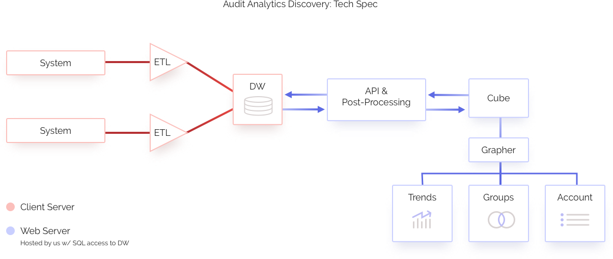
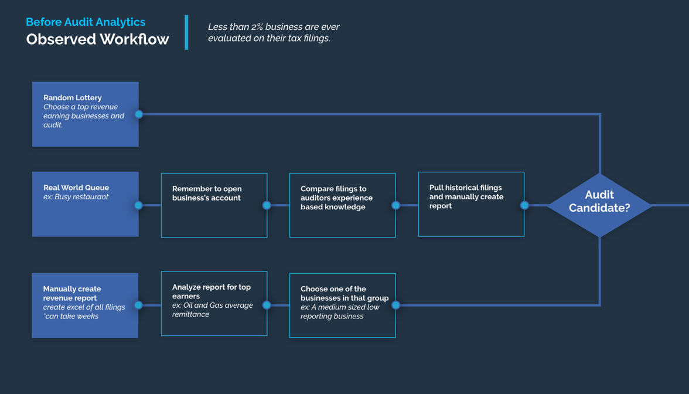

Project Background
Business Tax regulations are incredibly complex, and many taxes are leveraged through self-reporting. Because this environment fosters non-compliance, collection agencies use audits to impose education, compliance, and revenue recovery.
However, most collection agencies are only able to audit between 1 – 2% of all accounts. Of this small percentage, most audit candidates are chosen through a lottery system, which fails to account for industry trends and abnormalities in reporting behavior. To analyze such data can be a painstaking process of digging through individual accounts' paper records, which is why such analysis often doesn't take place.
Our Goal:
Empower the auditing process by combining data from multiple systems to get a holistic picture, not just the pieces, and in turn produce larger yields on revenue recovery.
Definition
One challenge this project faced was the variety of software and paper filings solutions used by different collection agencies. After researching the most commonly used systems and sorting through the paper filings, we deduced that four different APIs must be written.
Another complication the project faced was the structure of the agencies themselves. In some states, all taxes are not collected on a statewide level but a county/parish level, which means that there are many different collection agencies. Resulting in siloed databases, which is unfortunate as being able to compare them, would aid immensely in finding account discrepancies & delinquent accounts.

Design, Test, Iterate
Our company's position in the government sphere aided us with insight and reach into the collection industry.
Five onsite interviews at different collections agencies revealed that while systems may vary, the pain points amongst them did not. Each agency's most arduous tasks and processes were a direct result of poor access to their collections data.

Next, I managed a small team to develop a beta/demo version of our software, that integrated the previously inaccessible, non-aggregated data stores into a data warehouse. Leveraging web graphing tools (D3 and DC ) to visualize this information for our users. The team presented this demo at several conferences to gauge both interest and areas for improvement. We took this feedback and made adjustments to the software.